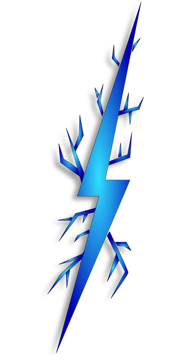
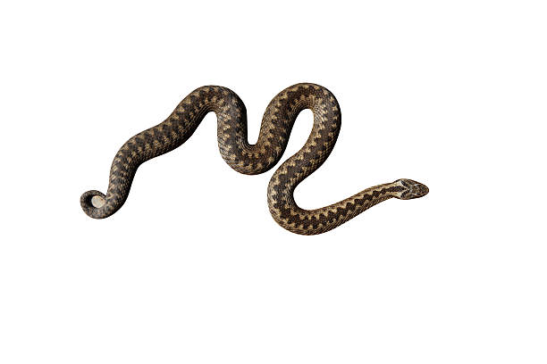

Przyroda?
Jak postępować w
niebezpiecznych sytuacjach
?
-
Co robić, jeśli zaczyna się
burza
?
a)
Jeżeli nadchodzi burza,
a ty jesteś w domu,
-
nie wychodż na zewnątrz
-
nie korzystaj z telefonów, laptopów, komputerów,
lub innych urządzeń elektrycznych
-
przygotuj latarkę na wypadek przerw dostarczania
prądu
b)
Jeżeli nadchodzi burza,
a ty jesteś na zewnątrz,
-
nie stawaj pod drzewami, wiatami przystanków,
słupami energetycznymi etc.
-
wyłącz telefon i wszystkie urządzenia elektryczne
-
jeżeli jesteś w wodzie jak najszybciej wyjdżna brzeg
-
jeśli znajdziesz się na otwartej przestrzeni, kucnij,
i zbliż stopy do siebie.

-
Co robić po ugryzieniu czy użądleniu
zwierząt lub owadów
?
a)
Po ukąszeniu przez żmiję
-
Nie ruszaj urażoną częścią ciała
-
Nie nacinaj miejsca ukąszenia, gdyż może to
spowodować wykrwawienie
-
Nie wolno też wysysać jadu żmii z rany. Przez
żołądek i drogi pokarmowe trucizna szybciej
trafi do serca.
